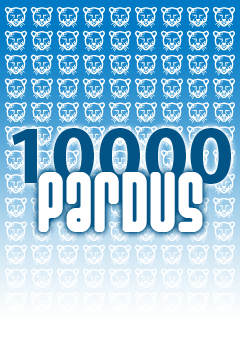

EMO Ankara Şubesi
10.000 Pardus dağıtıyor
2007 yılında 30. yaşını kutlayan EMO Ankara Şubesi daha önceki yıllarda Linux ve Özgür Yazılıma verdiği desteği Pardus 2007 için de somut olarak ortaya koyuyor. Tam 10.000 adet Pardus 2007 kurulum CD'sini üyelerine ve EMO-Genç olarak nitelenen Elektrik Elektronik Bilgisayar Biyomedikal Mühendisliği bölümleri öğrencilerine ücretsiz olarak dağıtıyor.
EMO Ankara Şubesi bunun dışında 13 Ocak tarihinde, Mühendislik Geliştirme Eğitimleri kapsamında Burak Oğuz tarafından yapılan Pardus 2007 tanıtımı ve 23-24 Şubat günlerinde Eskişehir İl Temsilciliği'nde EMO-Genç tarafından gerçekleştirilecek olan Linux ve Özgür Yazılım günleri etkinliğinde de Pardus'a olan desteğini vurguluyor. Yine ilerleyen aylar içinde Ankara Şube'ye bağlı diğer illerde de çok sayıda Linux ve Özgür Yazılım etkinliği düzenlenmesi planlanıyor.
Ayrıca 27 Ocak 2007 Cumartesi günü, EMO Bursa Şubesi tarafından düzenlenen Pardus seminerlerine EMO Ankara Şubesi de etkin destek verecek. Ankara Şube Yönetim Kurulu üyesi Bora Güngören, bu etkinlikte Pardus projesini ve Pardus çevresinde şekillenen iş modellerini de tanıtacak.
Bu web sitesinde bulunan bilgi ve belgelerin, kaynak gösterilmek koşulu ile kullanılması serbesttir.
Pardus markası ve logotipi TÜBİTAK'ın tescilli markasıdır. Kullanım koşulları için Yasal Uyarı bölümünü inceleyiniz.
Bilgi ve önerileriniz için bilgi at pardus.org.tr
TÜBİTAK - UEKAE, PK.74 41470, Gebze / Kocaeli.